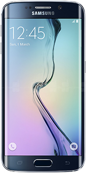
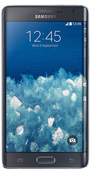
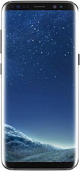
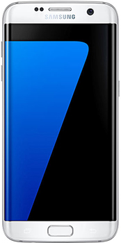

| Phone |
description |
Price |
|  Galaxy S6 Edge |
Your eyes must never have seen such glare ever. Very well executed Galaxy S6 and new Galaxy S6 edge are the most attractive smartphone handsets released recently. Having all high chances to catch the fancy eye of the public always looking for something unique, any one of the new Galaxy S6 or Galaxy S6 edge will do the magic. |
590$ |
 Samsung Galaxy Note 8 Samsung Galaxy Note 8 |
Samsung has decided to continue Galaxy Note series and this time its 8 which is rising from the ashes of its discontinued sibling. Sometime things go wrong and we did not get the same results as we expected. Korean giant is leaving behind all its bad memories and Samsung Galaxy Note 8 is going to launch soon. It will the fresh start for company after discontinuation of its most loved device. |
1080$ |
| Note Edge |
Let's pay our regards to the Samsung's Most revolutionary mobile phone by far: The Galaxy Note Edge, drawing the attention of all the techies internationally who are in love with gadgets. Previously a Samsung concept youm changed Note Edge is utterly identical to it's sibling the note 4 however it packs a bent screen that's really a deal to grab and experience. possessing all the positive capabilities of note 4 and having screen folded on a Edge. |
890$ |
| Galaxy S8 |
Samsung stupefies everybody by announcing Galaxy S8 so soon as it's a very strong addition to galaxy family. Redefined with 5.8 inches Super AMOLED capacitive display it comes under the protection of corning gorilla glass 5. Samsung's Galaxy S8 is running on Android operating system v7.0 that runs the phone without a hitch. In single sim model, there is a dedicated slot for SD card while Samsung Galaxy S8 also assembled with dual sim slots. In the case of dual-sim, you can use second sim slot as the SD card slot. 64 GB or 128 GB built-in memory is provided to Samsung S8 but you can also expand the memory up to 256 GB with help SD card. |
860$ |
| Galaxy S7 Edge |
Samsung introduced new variant of Galaxy S7 that belongs to the famous Edge 128GB family. They have introduced this variant in Pakistan with 128 GB built-in memory but you can still expand memory up to 256 GB with SD card. Samsung Galaxy S7's improvement in memory has also raised the price of device up to 95000 but this price is nothing what you are getting in exchange. |
679$ |